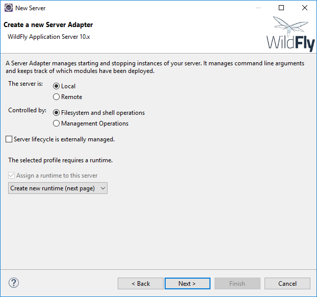
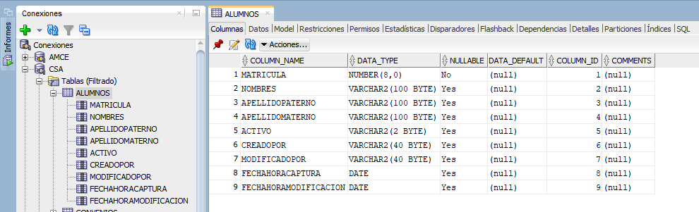

Requerimientos para poder trabajar.
-
Eclipse.
Para la facilidad de trabajo e instalación del servidor en donde vamos a montar nuestra aplicación web, utilizamos eclipse, se puede descargar del siguiente link: https://www.eclipse.org/downloads/ Descargamos la última versión o la versión PHOTON.

-
Descargamos el instalador.

-
Descargamos, instalamos y eleccionamos Java EE.

-
Al finalizar y ejecutar eclipse, comenzará a cargar y saldrá algo así.
-
Antes de continuar, nos pedirá que seleccionemos un lugar de trabajo, esto no quiere decir que sea solamente ese lugar de trabajo, ya que eclipse antes de abrir te da la opción de elegir cuál lugar de trabajo quieres manejar, y cada lugar de trabajo puede tener uno o más proyectos. En este caso utilizaremos el default, si este no existe, eclipse lo crea y empiezas a trabajar sobre él.

-
Esta sería la ventana final después de todo este paso.

-
-
Herramientas de Eclipse
-
Para poder descargar el servidor de Wildfly que necesitamos, primero tendremos que descargar la herramienta:
JBoss Tools. Entramos Eclipse → Window → Preferences
-
Abrimos la opción Server → Runtime Enviroments, das clic en add. Aparecerá un nuevo diálogo, expandimos la carpeta Red Hat JBoss Middleware, click en JBoss AS, WildFly, & EAP Server Tools, click en Next o siguiente.
Aceptas las licencias y esperas a que termine de descargar todos los programas, al final esperas hasta que aparezca un diálogo que te pida reiniciar eclipse mientras eso no pase significa que aún sigue descargando archivos.
-
-
Wildfly v10.x
-
Ya teniendo JBoss Tools instalado, procederemos a instalar un servidor de Wildfly, en este caso utilizamos la versión 10.x final. Seleccionamos la pestaña de Servers, si no se encuentra en la view de Eclipse podemos buscarla en Window → Show View → Servers.

-
Seleccionamos la opción “No servers are available. Click this link to create a new server.” y seleccionamos el servidor Wildfly 10.x.

 -
Ya que aún no tenemos un runtime para el servidor, tendremos que descargarlo. Seleccionamos “Download and install runtime…”


-
Finalizamos y saldrá algo así.
-
Ahora tenemos que configurar nuestro Wildfly para las aplicaciones web. Vamos a la carpeta en donde se instaló y buscamos la carpeta bin.

-
Entramos y pegamos los siguientes archivos que están en la carpeta “Conexión a base de datos”:
admintx_csa.properties, log4j_csa.properties y log4j.properties
-
Ahora tendremos que copiar la carpeta modules de la carpeta “Conexión a base de datos” y pegarla en la raíz de wildfly, para verificar que se metieron los archivos hay que llegar hasta esta ruta: modules/system/layers/base/com/oracle/main y encontrar los siguientes archivos: module.xml y ojdbc7.jar.

-
Tenemos que configurar la conexión de Wildfly a la base de datos, para eso buscaremos en la carpeta raíz de wildfly-10.1.0.Final/standalone/configuration/standalone.xml aquí tenemos que reemplazar por el que viene en “Conexión a base de datos”. Este contiene un pool para la conexión, el cual se verá reflejado en los siguientes pasos.
Ahora tendremos que configurar el puerto con el que vamos a entrar a la aplicación web, esto se hace debido a que el puerto que utiliza el XE de Oracle SQL Developer puede causar conflicto con el 8080 y no podremos entrar a la aplicación. Esto se hace en la siguiente imagen.
-
Hecho esto, guardamos con ctrl+s y daremos click derecho al servidor, le damos Start y empezará a levantar el servidor en localhost.
Para poder ingresar a localhost:9990 que es la dirección de administración de Wildfly, se necesita crear un usuario, para esto vamos a la carpeta de Wildfly y buscamos el siguiente archivo: -
Damos doble click y aparecerá una ventana de CMD así:

-
Seleccionamos la opción a, damos enter y nos va a preguntar el nombre de usuario, podemos poner cualquiera y volvemos a dar enter. Nos pedirá una contraseña, la contraseña puede ser cualquiera, pero para fácil acceso utilizamos 1234, nos dará un aviso de que debe de ser de 8 caracteres, pero podemos seguir poniendo yes en la consola, nos preguntará en qué grupo queremos añadir al usuario, solamente presionamos enter y seguimos, le damos yes de nuevo y añadirá al usuario en el grupo antes dicho, en la última ponemos no y terminamos.

-
Reiniciamos el servidor. Ahora toca hacer un test de conexión con la base datos. Para esto iremos a nuestro navegador e iremos a la siguiente dirección: localhost:9990, nos pedirá el usuario y contraseña para entrar.

-
Seleccionamos la pestaña “Runtime”. Y vamos a donde sale la imagen y seleccionamos”View”.

-
Seleccionamos poolCSA y damos a “Test Connection”.
-
El servidor ya quedó listo con la conexión para la base de datos.

-
-
Oracle.
-
Para trabajar con la base de datos, Oracle SQL Developer, se puede utilizar otro manejador de base de datos.
El instalador se encuentra en la carpeta Oracle SQL Developer dentro del manual. Primero debemos instalar el que viene en la carpeta OracleXE/DISK1.
-
Hecho esto, debemos de ubicarnos en la carpeta sqldeveloper-4.1.0.19.07-no-jre, abrimos sqldeveloper-4.1.0.19.07-no-jre\sqldeveloper\sqldeveloper.exe
-
Primero tenemos que configurar una conexión a una base de datos, en nuestro caso utilizaremos la siguiente configuración:
Nombre del host: ec2-13-58-25-192.us-east-2.compute.amazonaws.com
Usuario: CAPACITACION
Contraseña: CAPACITACION#05032019Damos en probar conexión y en Estado: debe de decir “Correcto”. Por ultimo le das en Guardar y Conectar.
-
-
Acceso a datos
-
Entidades
Una entidad es la representación de una tabla en la base de datos. Cada instancia de esta, es una fila que se puede consultar, eliminar, modificar y agregar. Debido a que las entidades son objetos, estos pueden tener otros objetos dentro de ellas. Ejemplo:
public class Auto{
private Integer identificador;
private Marca idMarca;
private Modelo idModelo;
}
Se pueden ver los objetos, estos objetos representan toda la información de una entidad creada anteriormente, esta entidad contiene datos correspondientes a su tabla. Para simplificar, una entidad contiene los datos de su tabla, pero si un campo hace referencia a otra tabla que ya tiene una entidad, y en un futuro se puede ocupar un campo aparte de su identificador, se utiliza la entidad de esta misma, ya que aquí podremos guardar datos de la tabla y datos de su tabla relacionada.
Ejemplo de consulta:SELECT AU.*, MA.DESCRIPCIONMARCA, MO.DESCRIPCIONMODELO FROM AUTO AU LEFT JOIN MARCA MA ON AU.IDMARCA = MA.IDMARCA LEFT JOIN MODELO MO ON AU.IDMODELO = MO.MODELO AND AU.MARCA = MO.MARCA;
En esta consulta, se manda a pedir la descripción de la marca y el modelo en donde el id de cada uno en el automóvil sea igual en cada una de sus tablas, en el caso de modelo se tiene que tomar en cuenta la marca también porque los modelos vienen de una marca de automóviles.
La tabla sobre la que vamos a trabajar será la siguiente: ALUMNOSPara las entidades, se crea un proyecto el cual las contiene todas.
Iremos a File → New → Other → Java Project.

Creamos los siguientes paquetes dentro de source: com.matco.manual.entity
Hecho esto, tendremos que crear una clase la cual será la entidad, a esta le pondremos “Alumno”.
El código terminará así:package com.matco.manual.entity;
import java.io.Serializable;
import java.util.Date;
public class Alumno{
private String nombre;
private String apellidoPaterno;
}
-